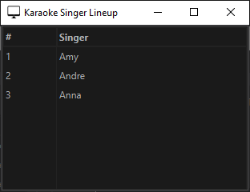

Enhancing the Experience
Beyond simple playback, jKaraoke offers advanced tools to improve the audio and visual experience of your event.
1. The Equalizer
jKaraoke includes a built-in 10-band equalizer to help you get the best sound out of your speakers.
- Accessing: Open the Equalizer from the main view (often via a dedicated button or menu option).
- Presets: Use the dropdown menu to select from standard presets like Flat, Bass Boost, Treble Boost, Vocal Boost, Rock, Pop, Jazz, Classical, Dance, and Karaoke.
- Custom Settings: You can manually adjust the sliders for individual frequencies (32Hz to 16kHz).
- Saving Presets: If you find a custom setting you like, enter a name in the "Custom Preset Name" field and click Save to keep it for future use.
- Enable/Disable: Use the checkbox to toggle the equalizer on or off instantly to compare the sound.
2. Media View (Dual Monitor Support)
For a professional setup, you want the lyrics on a separate screen for the singer while you manage the queue on your laptop.
- Opening the Window: Launch the "Media View" window from the application controls.
- Positioning: Drag this window to your secondary monitor (TV or Projector) and maximize it.
- Functionality: This window automatically displays the CDG lyrics when a song is playing. When no song is active, it may show a waiting screen or blank output.
3. Singer Lineup Window (Queue Display)
For a professional karaoke setup, the Singer Lineup window allows you to display the singer queue on a separate screen so singers and the audience can see who's coming up next.
Purpose
The Singer Lineup window provides a public-facing display of your karaoke queue. This helps singers know approximately when they're supposed to sing and reduces interruptions from people asking "when am I up?"
Opening the Window
- Launch: Select Window → Singer Lineup from the menu bar to open the Singer Lineup window.
- Initial Display: The window will appear showing your current singer queue in a clean, easy-to-read table format.
Positioning for Dual Monitor Setup
- Drag to Secondary Display: Move the Singer Lineup window to your secondary monitor, TV, projector, or any separate display.
- Maximize for Visibility: Maximize the window on the secondary display so singers and audience members can easily see the queue from a distance.
- Professional Setup: This allows you to manage the queue privately on your laptop while singers can check their position on the public display.
What It Displays
The Singer Lineup window shows a simple two-column table:
- Lineup Number (#): A numbered list showing each singer's position in the queue
- Singer Name: The name of each singer in order of their upcoming performances
Live Updates
The lineup automatically updates in real-time as you make changes to the queue in the main application. When you add, remove, or reorder singers in the main queue, the Singer Lineup window reflects those changes immediately—no manual refresh needed.
Use Cases
- Reduced Interruptions: Singers can check their position without asking the host
- Better Planning: Allows singers to see when their turn is coming up so they can prepare
- Professional Appearance: Creates a more polished, organized karaoke experience
- Audience Engagement: Keeps the audience informed about upcoming performances
4. Application Settings
Customize the behavior of jKaraoke to suit your preferences.
- Visualizations: Change the color of the audio spectrum analyzer using the color picker in the settings menu.
- Auto-Save: Toggle the "Auto-Save" feature to ensure your event data is periodically saved to disk, preventing data loss in case of a crash.
5. Supported Media Types
jKaraoke uses the JavaFX Media Player to handle audio and video playback. Understanding which formats are supported can help you prepare your media library correctly.
JavaFX Media Player Supported Formats
Based on the JavaFX 25 Media Package documentation, the following formats are supported:
Audio Formats:
- MP3 (.mp3) - MPEG-1, 2, and 2.5 audio streams
- WAV (.wav) - Waveform Audio File Format with uncompressed PCM audio
- AIFF (.aif, .aiff) - Audio Interchange File Format with uncompressed PCM audio
- AAC in MP4 (.m4a, .mp4) - MPEG-4 container with Advanced Audio Coding
Video Formats:
- MP4 (.mp4, .m4v) - MPEG-4 Part 14 container with H.264/AVC or H.265/HEVC video and AAC audio
Streaming:
- HLS (.m3u8) - HTTP Live Streaming with MP4 fragments
CDG+MP3 Karaoke Files
The standard format for karaoke files requires two separate files working together:
- CDG (CD+Graphics) files contain the synchronized lyrics/graphics data
- CDG files must be paired with a corresponding MP3 audio file with the same base filename (e.g.,
song.cdg+song.mp3) - Automatic synchronization: jKaraoke handles the synchronization between the CDG graphics and MP3 audio playback automatically
- Standard format: This is the standard format for karaoke files and provides on-screen lyrics display
Important Notes
- Platform-native codecs: JavaFX uses platform-native codecs, so support may vary slightly across Windows, macOS, and Linux
- Best compatibility: For best compatibility, MP4 (H.264/AAC) and MP3 formats are recommended
- Supported protocols: File, HTTP(S), and JAR (for bundled media resources)